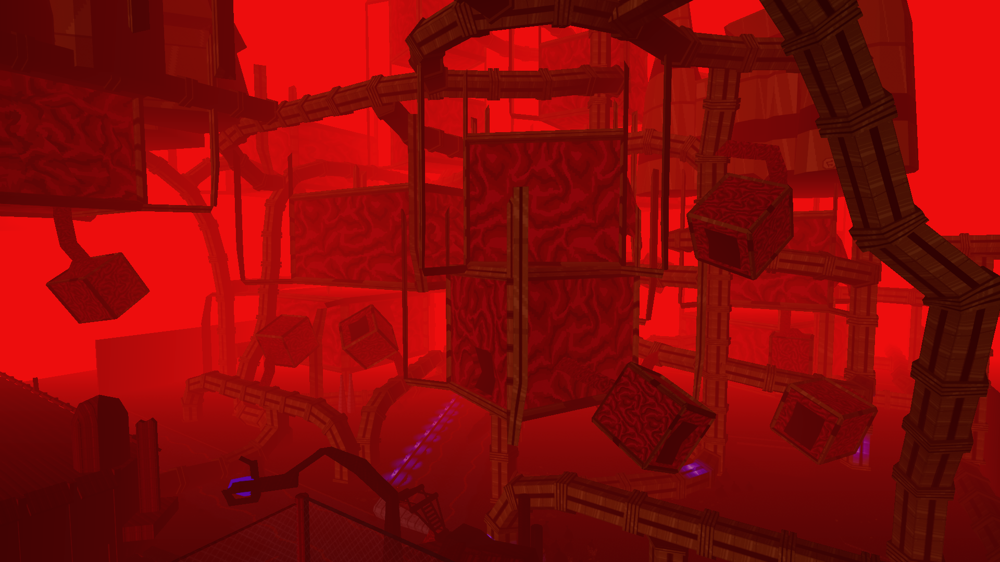

On Your Hands is a game that fuses challenging first person puzzles with spine-chilling horror. Inspired by Portal, Quake, and Half-Life, in On Your Hands you think fast - or die faster.
On Your Hands is a game that fuses challenging first person puzzles with spine-chilling horror. Inspired by Portal, Quake, and Half-Life, in On Your Hands you think fast - or die faster.
THE STORY SO FAR
You have no idea where you are. You've awoke on what seems to be an alien planet, with nothing but your flashlight and your wits. All you remember is that you were doing research on teleportation when the experiment went wrong, and you saw a white flash of light... now you're here. The only thing familiar to you is the voice of Mack, your friend and fellow researcher. You're going to need to do what it takes to survive, and make it back to Earth.

MASTER OF MAGIC
On Your Hands contains seven unique magical abilities, each of which aid in solving puzzles or fighting enemies. Uncover their secrets, make careful use of their quirks, and even upgrade them to better aid your survival.
CREATURE FEATURE
Deadly monsters such as Lurkers, Grinders, or Concealer will make surviving difficult - cower, confront, or even kill them to make it through Ooblterra alive.
UNRAVEL THE MYSTERY

Find hidden secrets throughout On Your Hands' levels to reveal the truth - of the 'Oobl', the strange alien race who control Ooblterra; of the wildlife that populates it; and of Prot and Mack - there's more to their history than meets the eye.